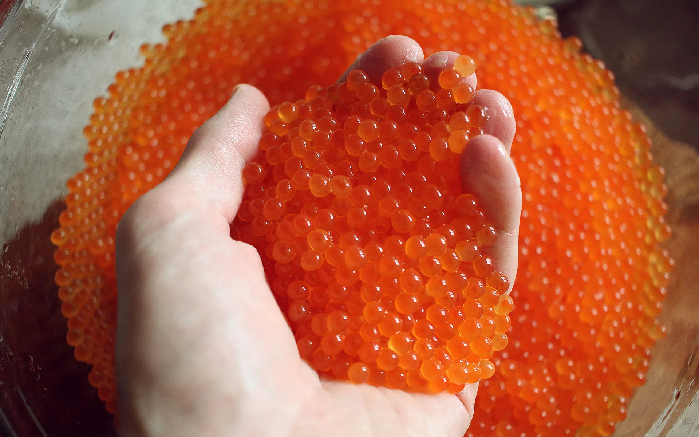
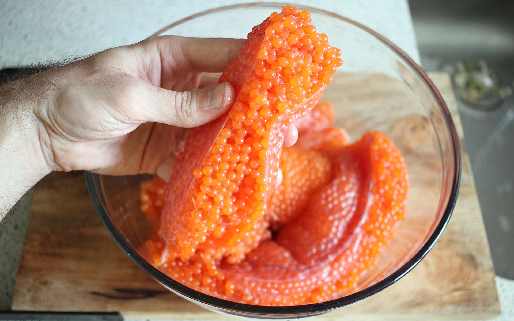
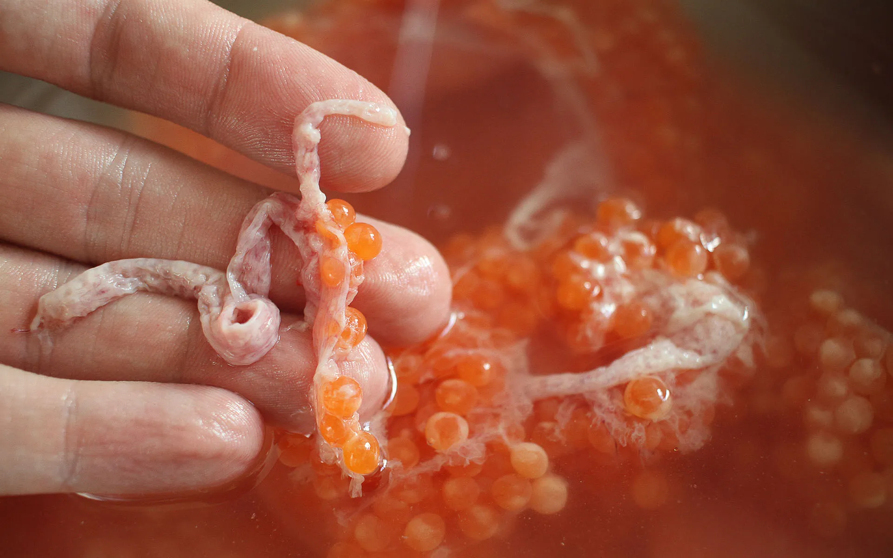
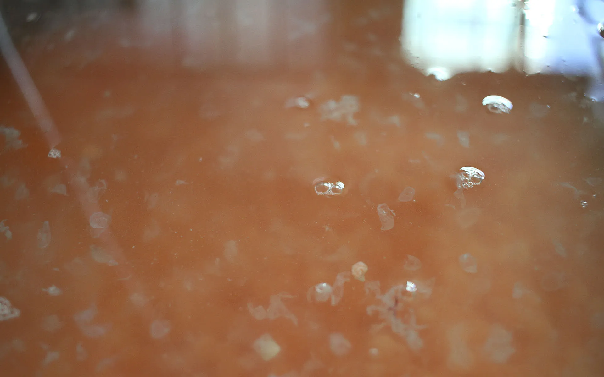
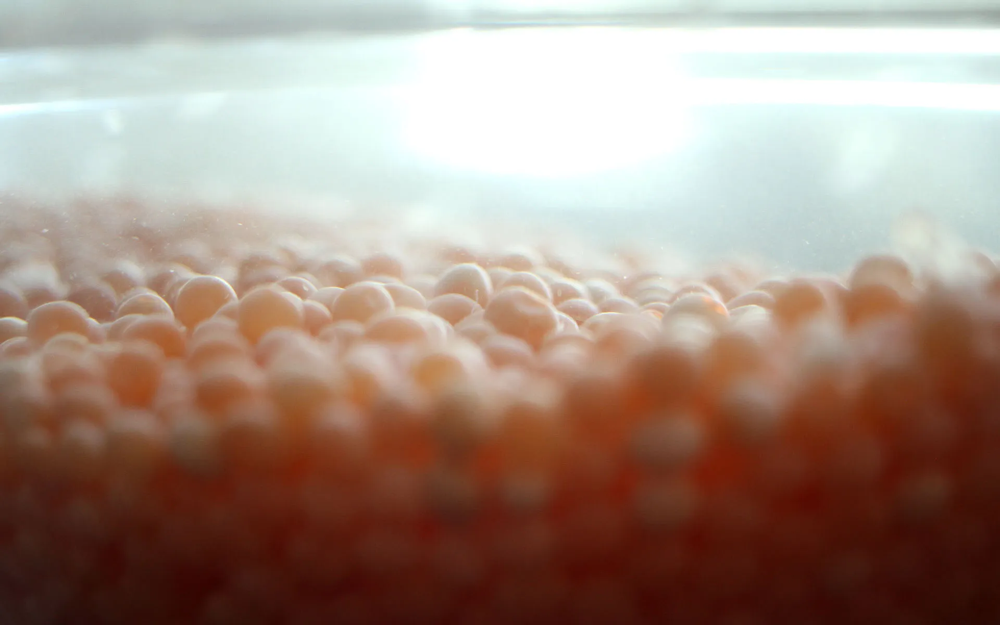
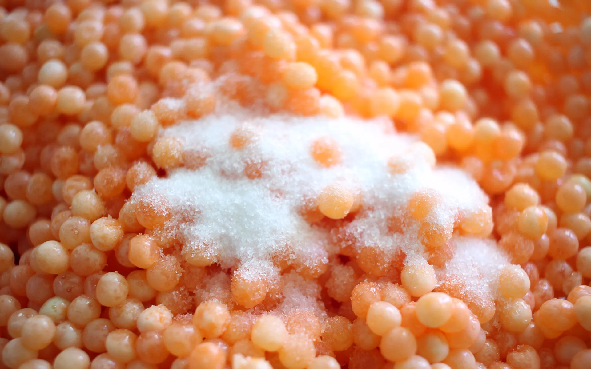
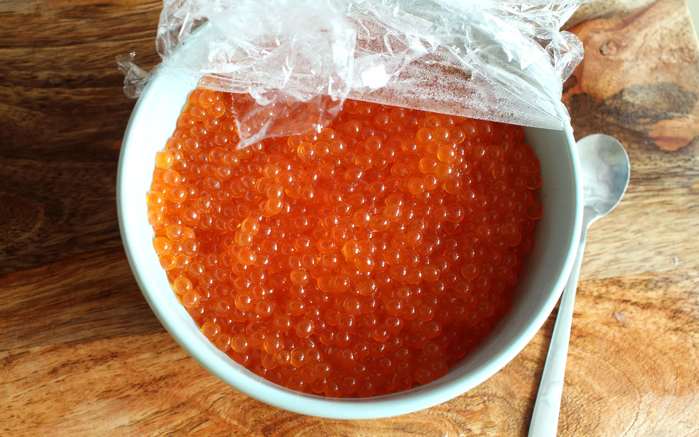
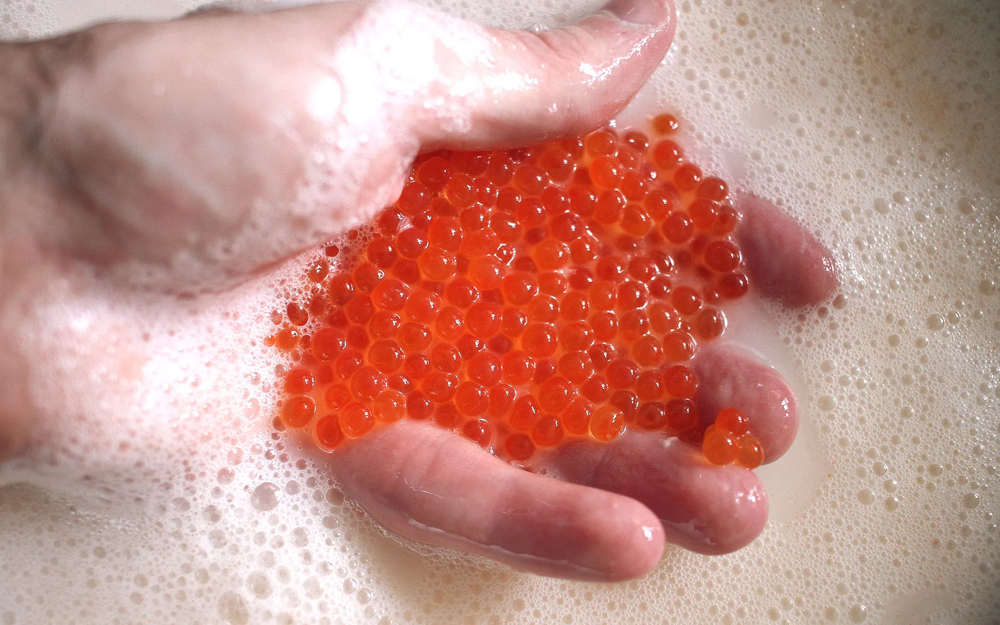
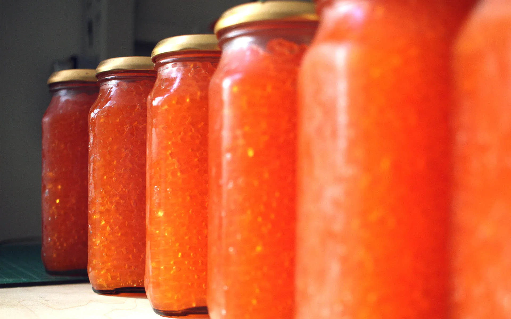
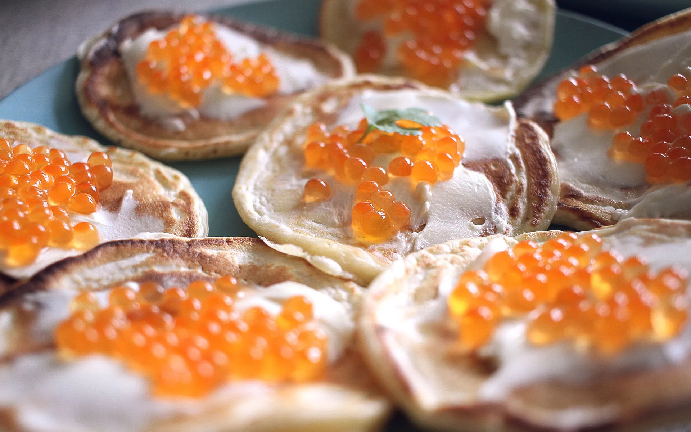

Edibles
Recipes and food creations.
Caviar

Traditionally, caviar refers to Sturgeon roe, however has since been used interchangeably for other types of fish. The caviar I've known since childhood has been from Salmon roe and is considered a delicacy. This recipe describes a high yield processing and curing of すじこ into красная икра.
Separation
In raw form, most roe is bundled inside the egg sack.

The best way to remove the egg membranes and separate the eggs is to dissolve it. After a cold water rinse, soak the roe. The water should be hot to the touch, but not burning because here you will "massage" the eggs out and separate the membrane away. In hot water, roe turns solid and opaque. Cold water will make it soft and translucent.

Rinse in cold water to drain all the loose membraine bits and repeat the process untill the water is clear with no floating flakes. This process should take 5-7 repeats.
 
Once free of debris, drain all water using a sieve.
Curing
Add 3 table spoons of salt per kg of loose roe and hand-mix. Don't be shy with the mixing. Roe is tough but don't be too rough either, avoid breaking the eggs. The salt will give roe a vivid orange color. After a thorough mix, keep in the fridge for 20 minutes to soak.
 
After soaking, the salt would have brought out a lot of moisture from the eggs. Drain as much liquid as possible. It helps to mix it a little to help the trapped moisture escape. Taste the roe! If it's not salty enough, you can add more salt and repeat the soaking process. If it's too salty, you can do a second pass below.
Second Pass (optional)
This is an optional step if you want to do a cleaner yield or reduce salt amount. Wash the roe in cold water. Salty eggs will make the water white and milky. At this stage the eggs are fragile, be gentle to avoid popping too many.

Repeat the salting process, ajusting amounts of salt as needed, soak, drain, taste, jar!

Serve
Classic way to serve: a teaspoon worth on white or бородинский bread with unsalted butter. Here, served on savory pancakes and cream cheese:
